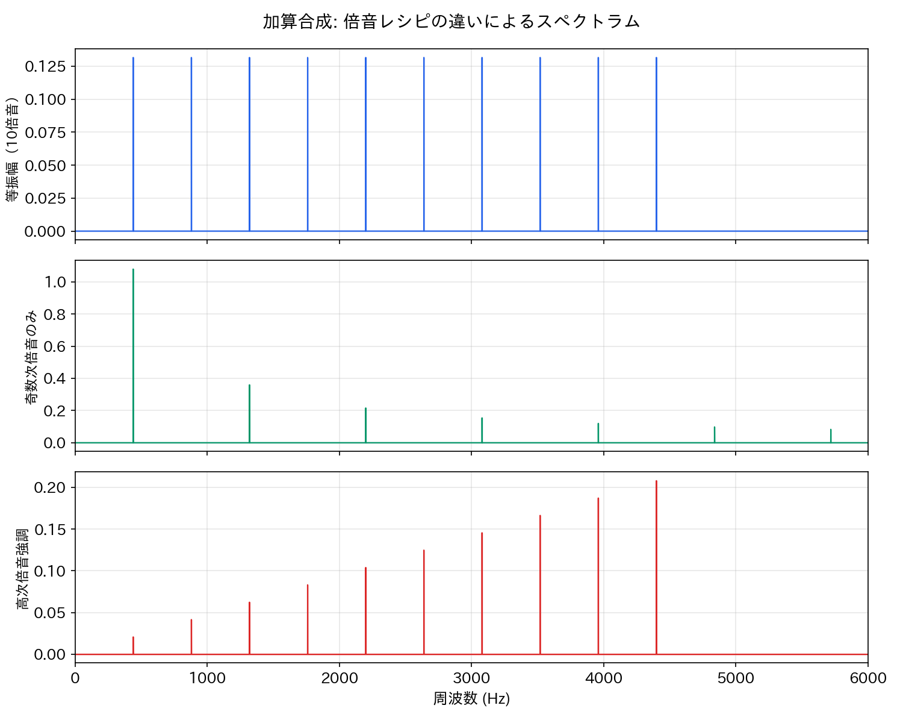
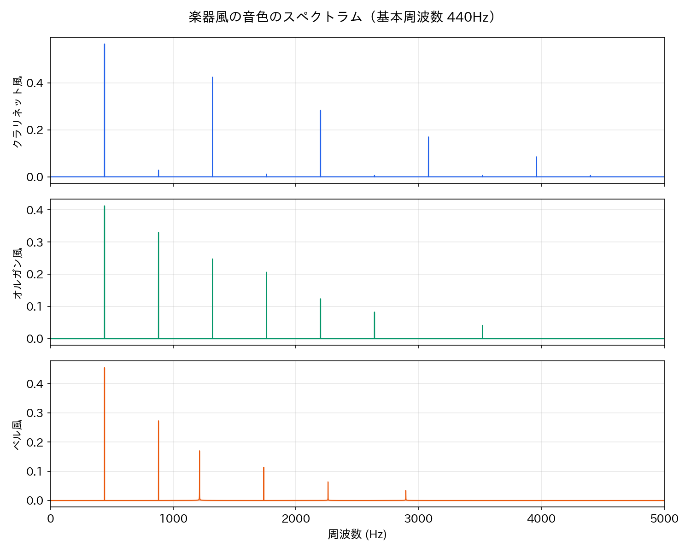
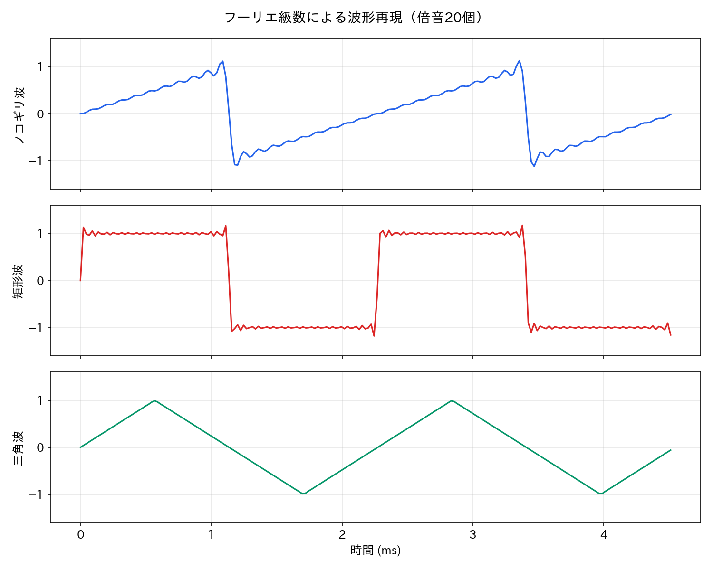
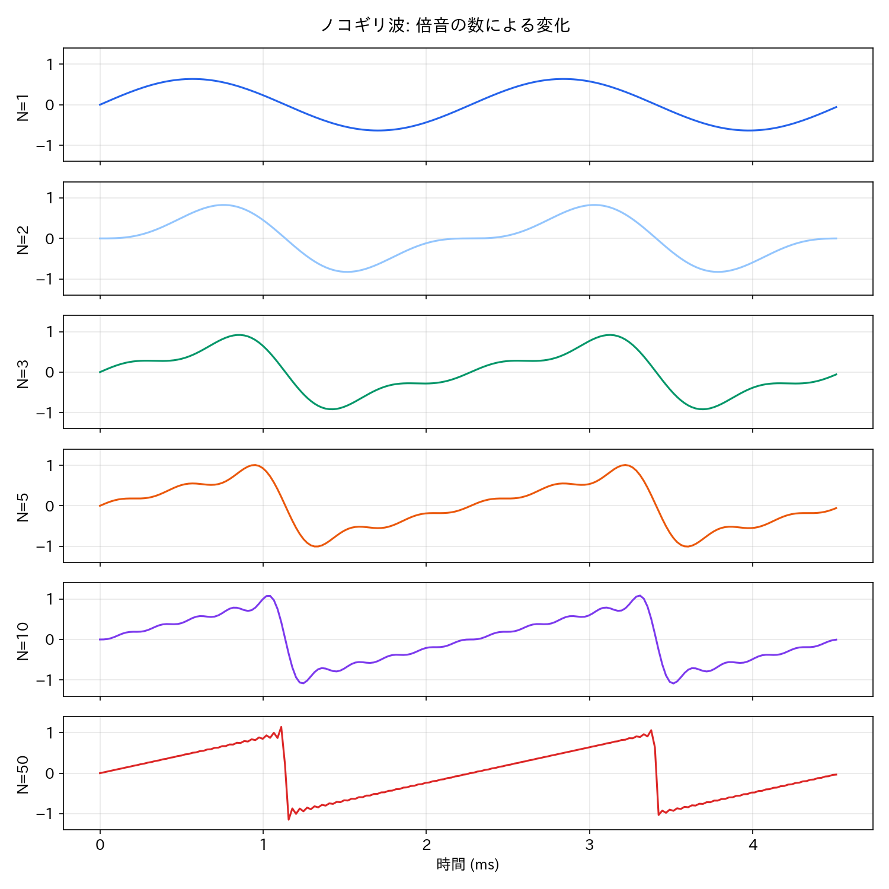
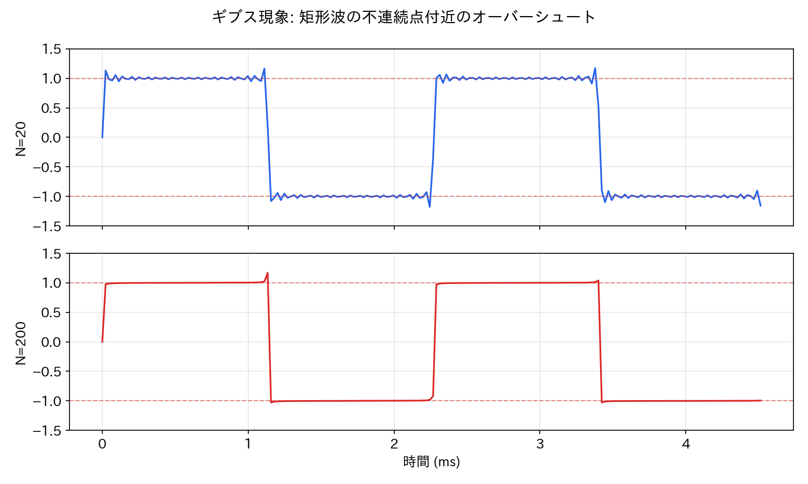

Lesson 4: 倍音と音色¶
このレッスンで学ぶこと¶
- 倍音列の概念を理解する
- 加算合成（サイン波の重ね合わせ）で音色を作る原理を学ぶ
- フーリエ級数の直感的な意味を理解する
- 倍音の構成が音色を決めることを実験で確かめる
Lesson 2 では「波形の形が違うと音色が変わる」ことを体験し、その理由が倍音にあることに触れました。このレッスンでは倍音を正面から扱い、「サイン波を足し合わせて音色を作る」加算合成を実践します。
セットアップ¶
新しいノートブックを開き、最初に Lesson 1 と同じセットアップセル（audio_lib のインストールと setup_environment()）を実行してください。続けて、今回使うライブラリを読み込みます。
import numpy as np
import matplotlib.pyplot as plt
from IPython.display import display
from audio_lib import sine_wave, additive_synth, AudioSignal
from audio_lib.notebook import play_sound, plot_waveform, plot_spectrum, plot_harmonics
4.1 倍音列とは¶
ギターの弦を弾くと、弦全体が振動して基本的な音の高さ（基本周波数）が決まります。しかし実際には、弦は全体の振動だけでなく、2分の1、3分の1、4分の1…の長さでも同時に振動しています。
この結果、基本周波数 \(f\) に対して \(2f\)、\(3f\)、\(4f\)、… という周波数の成分が同時に鳴ります。これが倍音列（harmonic series）です。
| 名称 | 周波数 | 440Hz の場合 | 音程の関係 |
|---|---|---|---|
| 基本波（第1倍音） | \(f\) | 440 Hz | ユニゾン |
| 第2倍音 | \(2f\) | 880 Hz | 1オクターブ上 |
| 第3倍音 | \(3f\) | 1320 Hz | 1オクターブ+完全5度上 |
| 第4倍音 | \(4f\) | 1760 Hz | 2オクターブ上 |
| 第5倍音 | \(5f\) | 2200 Hz | 2オクターブ+長3度上 |
| 第6倍音 | \(6f\) | 2640 Hz | 2オクターブ+完全5度上 |
倍音列を聞いてみましょう。
f0 = 440 # 基本周波数
dur = 1.5
for k in range(1, 7):
sig = sine_wave(f0 * k, dur)
display(play_sound(sig, f"第{k}倍音: {f0 * k}Hz"))
第2倍音は基本波の1オクターブ上で「同じ音」に聞こえ、第3倍音は完全5度の関係にあります。倍音列は音楽の音程関係（ハーモニー）の物理的な基盤でもあるのです。音程と周波数比の関係は Lesson 6 で詳しく扱います。
4.2 加算合成で音色を作る¶
加算合成（additive synthesis）とは、複数のサイン波を足し合わせて複雑な音色を作る方法です。Lesson 2 で「あらゆる周期的な波形はサイン波の重ね合わせで表現できる」というフーリエの原理を紹介しました。加算合成はその逆の操作——サイン波を組み合わせて望みの音色を作る——です。
audio_lib の additive_synth() を使えば、倍音の「レシピ」を辞書（dict）で渡すだけで音色を作れます。辞書は {キー: 値} の形式でデータのペアを格納する Python の仕組みです。ここではキーが基本周波数に対する倍率、値が振幅を表します。
まず、倍音を1つずつ加えていく過程を聞いてみましょう。
f0 = 440
# 基本波だけ
display(play_sound(additive_synth(f0, {1: 1.0}), "第1倍音のみ"))
# 基本波 + 第2倍音
display(play_sound(additive_synth(f0, {1: 1.0, 2: 0.5}), "第1〜第2倍音"))
# 基本波 + 第2〜第3倍音
display(play_sound(additive_synth(f0, {1: 1.0, 2: 0.5, 3: 0.33}), "第1〜第3倍音"))
# 基本波 + 第2〜第5倍音
display(play_sound(additive_synth(f0, {1: 1.0, 2: 0.5, 3: 0.33, 4: 0.25, 5: 0.2}), "第1〜第5倍音"))
倍音が増えるにつれて音が豊かになり、ノコギリ波に近づいていくのがわかります。これは偶然ではありません。ノコギリ波のフーリエ級数がまさにすべての倍音を \(1/k\) の振幅で含んでいるからです。
4.3 倍音の構成を変えて音色を作る¶
加算合成の面白さは、倍音のレシピを変えるだけで、まったく異なる音色が生まれることです。
{k: 1.0 for k in range(1, 11)} は辞書内包表記と呼ばれる書き方で、for ループを使って辞書を一気に作れます。ここでは「キー 1〜10 に対して、すべて値 1.0」という辞書を生成しています。通常の for ループで書くと次のようになります。
辞書内包表記はこの処理を1行で書く便利な記法です。以降のコードでも頻繁に使います。
# すべての倍音を等しい振幅で
sig_equal = additive_synth(f0, {k: 1.0 for k in range(1, 11)})
display(play_sound(sig_equal, "等振幅（10倍音）"))
# 奇数次倍音のみ（矩形波的）
sig_odd = additive_synth(f0, {k: 1.0/k for k in range(1, 21, 2)})
display(play_sound(sig_odd, "奇数次倍音のみ"))
# 高次倍音を強調（金属的な音）
sig_metal = additive_synth(f0, {k: float(k) for k in range(1, 11)})
display(play_sound(sig_metal, "高次倍音強調（金属的）"))
plot_harmonics() で倍音の構成を棒グラフで確認してみましょう。
plot_harmonics(sig_equal, max_freq=6000, title="等振幅")
plot_harmonics(sig_odd, max_freq=6000, title="奇数次倍音のみ")
plot_harmonics(sig_metal, max_freq=6000, title="高次倍音強調")
スペクトラム全体を見たい場合は plot_spectrum() を使います。
plot_spectrum(sig_equal, max_freq=6000, title="等振幅")
plot_spectrum(sig_odd, max_freq=6000, title="奇数次倍音のみ")
plot_spectrum(sig_metal, max_freq=6000, title="高次倍音強調")

倍音のレシピ（どの倍音をどれだけの振幅で含めるか）が音色を決めている、ということが視覚的にも確認できます。
4.4 加算合成で「楽器っぽい音」を作る¶
倍音のレシピを工夫すれば、単なる基本波形だけでなく、楽器に近い音色を作ることもできます。
クラリネット風の音¶
クラリネットは管の構造上、奇数次倍音が強い特徴があります。
# クラリネット風: 奇数次倍音が支配的、偶数次は弱い
sig_clarinet = additive_synth(f0, {
1: 1.0, 2: 0.05, 3: 0.75, 4: 0.02, 5: 0.5,
6: 0.01, 7: 0.3, 8: 0.01, 9: 0.15, 10: 0.01,
})
display(play_sound(sig_clarinet, "クラリネット風"))
plot_harmonics(sig_clarinet, max_freq=6000, title="クラリネット風の倍音構成")
オルガン風の音¶
パイプオルガンは、複数のパイプ（レジスター）を組み合わせて音色を作ります。各パイプは特定の倍音に対応します。
# オルガン風: 基本波と低次倍音が均等に強い
sig_organ = additive_synth(f0, {
1: 1.0, 2: 0.8, 3: 0.6, 4: 0.5, 5: 0.3, 6: 0.2, 8: 0.1,
})
display(play_sound(sig_organ, "オルガン風"))
plot_harmonics(sig_organ, max_freq=6000, title="オルガン風の倍音構成")
ベル風の音（非整数倍音）¶
ここまで倍音は基本周波数の「整数倍」でした。しかし、鐘やシンバルなどの打楽器では、非整数倍の周波数成分（非調和倍音、inharmonic partials）が含まれます。additive_synth() は非整数の倍率もそのまま指定できます。
# ベル風: 非整数倍の周波数を含む
sig_bell = additive_synth(f0, {
1.0: 1.0, 2.0: 0.6, 2.76: 0.4, 3.95: 0.25, 5.14: 0.15, 6.58: 0.1,
})
display(play_sound(sig_bell, "ベル風"))
plot_spectrum(sig_bell, max_freq=4000, title="ベル風のスペクトラム")

整数倍の倍音だけだと「音階感のある」音に聞こえますが、非整数倍の成分が入ると金属的で複雑な響きになります。ベルの「キーン」という音色の秘密はここにあります。
4.5 additive_synth() の中身を見る¶
ここまで additive_synth() を使って加算合成を体験しました。では、この関数は中で何をしているのでしょうか。実は非常にシンプルです。
sample_rate = 44100
dur = 2.0
t = np.linspace(0, dur, int(sample_rate * dur), endpoint=False)
# additive_synth() の中身と同じ処理
harmonics = {1: 1.0, 2: 0.5, 3: 0.3} # レシピ
data = np.zeros_like(t)
for ratio, amp in harmonics.items(): # .items() でキーと値のペアを順に取り出す
data += amp * np.sin(2 * np.pi * ratio * f0 * t)
# 最大振幅を 1.0 に正規化
data /= np.max(np.abs(data))
sig = AudioSignal(data, sample_rate)
display(play_sound(sig, "手書き加算合成"))
np.sin(2 * np.pi * ratio * f0 * t) は Lesson 1 で学んだサイン波の数式そのものです。それを振幅 amp をかけて足し合わせているだけ——加算合成の原理はこれだけです。
4.6 フーリエ級数 — 波形を倍音に分解する¶
ここまで「サイン波を足して波形を作る」方向で加算合成を学びました。逆に、ある波形がどんな倍音を含んでいるかを数学的に表現するのがフーリエ級数（Fourier series）です。
フーリエ級数の考え方¶
周期 \(T\) の波形 \(y(t)\) は、次のように無限個のサイン波とコサイン波の和で表せます。
ここで:
- \(f = 1/T\) は基本周波数
- \(a_0/2\) は波形の平均値（直流成分）
- \(a_k\), \(b_k\) は第 \(k\) 倍音のコサイン成分・サイン成分の振幅
難しそうに見えますが、要するに「どんな複雑な波形でも、周波数の異なるサイン波を適切な割合で混ぜれば再現できる」ということです。
Lesson 2 の公式を振り返る¶
Lesson 2 で示した各波形のフーリエ級数を、この視点で整理してみましょう。
ノコギリ波:
→ すべての整数次倍音を含み、\(k\) 番目の倍音の振幅は \(1/k\) に比例する。
矩形波:
→ 奇数次倍音のみを含み、振幅は \(1/k\) に比例する。
三角波:
→ 奇数次倍音のみだが、振幅は \(1/k^2\) に比例する（矩形波より速く減衰）。
加算合成で3つの波形を再現する¶
公式どおりにサイン波を足し合わせて、各波形を再現してみましょう。ここでは additive_synth() ではなくフーリエ級数の公式に忠実に書きます（符号や係数の意味を確認するため）。
N = 20 # 足し合わせる倍音の数
# ノコギリ波
data_saw = np.zeros_like(t)
for k in range(1, N + 1):
data_saw += ((-1.0) ** k / k) * np.sin(2 * np.pi * k * f0 * t)
data_saw *= -2.0 / np.pi
# 矩形波
data_sq = np.zeros_like(t)
for k in range(1, N * 2, 2): # 奇数次のみ
data_sq += (1.0 / k) * np.sin(2 * np.pi * k * f0 * t)
data_sq *= 4.0 / np.pi
# 三角波
data_tri = np.zeros_like(t)
for k in range(1, N * 2, 2): # 奇数次のみ
n_idx = (k - 1) // 2
data_tri += ((-1.0) ** n_idx / k ** 2) * np.sin(2 * np.pi * k * f0 * t)
data_tri *= 8.0 / np.pi ** 2
# 波形を表示
show_samples = int(sample_rate * 2 / f0)
t_show = t[:show_samples] * 1000
fig, axes = plt.subplots(3, 1, figsize=(12, 8), sharex=True)
for ax, (data, name) in zip(axes, [
(data_saw, "ノコギリ波"),
(data_sq, "矩形波"),
(data_tri, "三角波"),
]):
ax.plot(t_show, data[:show_samples])
ax.set_ylabel(name)
ax.set_ylim(-1.5, 1.5)
ax.grid(True, alpha=0.3)
axes[-1].set_xlabel("時間 (ms)")
fig.suptitle(f"フーリエ級数による波形再現（倍音{N}個）", fontsize=14)
plt.tight_layout()
plt.show()

display(play_sound(AudioSignal(data_saw, sample_rate), "ノコギリ波（加算合成）"))
display(play_sound(AudioSignal(data_sq, sample_rate), "矩形波（加算合成）"))
display(play_sound(AudioSignal(data_tri, sample_rate), "三角波（加算合成）"))
\(N = 20\) でも十分それらしく聞こえます。足し合わせる倍音の数を増やすほど理想的な波形に近づきます。
4.7 倍音の数と波形の関係を観察する¶
倍音の数を変えたときに波形がどう変化するか、じっくり観察しましょう。ノコギリ波で試します。
harmonics_list = [1, 2, 3, 5, 10, 50]
fig, axes = plt.subplots(len(harmonics_list), 1, figsize=(12, 10), sharex=True)
for ax, N in zip(axes, harmonics_list):
data = np.zeros_like(t)
for k in range(1, N + 1):
data += ((-1.0) ** k / k) * np.sin(2 * np.pi * k * f0 * t)
data *= -2.0 / np.pi
ax.plot(t_show, data[:show_samples])
ax.set_ylabel(f"N={N}")
ax.set_ylim(-1.3, 1.3)
ax.grid(True, alpha=0.3)
axes[-1].set_xlabel("時間 (ms)")
fig.suptitle("ノコギリ波: 倍音の数による変化", fontsize=14)
plt.tight_layout()
plt.show()

for N in harmonics_list:
data = np.zeros_like(t)
for k in range(1, N + 1):
data += ((-1.0) ** k / k) * np.sin(2 * np.pi * k * f0 * t)
data *= -2.0 / np.pi
display(play_sound(AudioSignal(data, sample_rate), f"ノコギリ波 N={N}"))
- \(N=1\): 純粋なサイン波（「ピー」）
- \(N=2\): 第2倍音が加わり、わずかに鼻にかかった音に
- \(N=3\): 音色がはっきり変わり始める
- \(N=5\): ノコギリ波の特徴的な明るさが出てくる
- \(N=10\): ほぼノコギリ波
- \(N=50\): Lesson 2 の
sawtooth_wave()とほぼ同じ音
\(N=50\) は audio_lib の sawtooth_wave() が内部で行っている処理とほぼ同じです（Lesson 2 の 2.3 節で触れた「帯域制限付き加算合成」の正体がこれです）。
4.8 ギブス現象 — 不連続点の「ひげ」¶
矩形波やノコギリ波のように不連続点（値が急に跳ぶ場所）を持つ波形をフーリエ級数で近似すると、不連続点の付近に約9%のオーバーシュート（行き過ぎ）が生じます。これをギブス現象（Gibbs phenomenon）と呼びます。
fig, axes = plt.subplots(2, 1, figsize=(12, 6), sharex=True)
for ax, N, title in zip(axes, [20, 200], ["N=20", "N=200"]):
data = np.zeros_like(t)
for k in range(1, N * 2, 2):
data += (1.0 / k) * np.sin(2 * np.pi * k * f0 * t)
data *= 4.0 / np.pi
ax.plot(t_show, data[:show_samples])
ax.set_ylabel(title)
ax.set_ylim(-1.5, 1.5)
ax.axhline(y=1.0, color='r', linestyle='--', alpha=0.5)
ax.axhline(y=-1.0, color='r', linestyle='--', alpha=0.5)
ax.grid(True, alpha=0.3)
axes[-1].set_xlabel("時間 (ms)")
fig.suptitle("ギブス現象: 矩形波の不連続点付近のオーバーシュート", fontsize=14)
plt.tight_layout()
plt.show()

赤い点線が理想的な矩形波の上限（+1）と下限（−1）です。\(N\) を増やしても、不連続点の近くでは約 1.09 まで飛び出す「ひげ」が消えません。これはフーリエ級数の数学的性質であり、バグではありません。
三角波にはギブス現象が起きません。三角波は値そのものは連続（つながっている）で、不連続なのは傾きの変化だけだからです。
4.9 帯域制限と加算合成の関係¶
Lesson 2 で「audio_lib の sawtooth_wave() は帯域制限付き加算合成で生成している」と説明しました。ここでその意味を詳しく見ましょう。
エイリアシングの問題¶
Lesson 1 で学んだナイキスト周波数（サンプリングレートの半分 = 22050Hz）を超える周波数成分は正しく記録できず、エイリアシング（折り返し歪み）を起こします。
単純な数式でノコギリ波を生成する（2 * phase - 1）と、理論上は無限個の倍音を含むため、高次倍音がナイキスト周波数を超えてエイリアシングが発生します。
帯域制限付き加算合成¶
解決策は、ナイキスト周波数以下の倍音だけをサイン波で足し合わせることです。これが帯域制限付き加算合成（band-limited additive synthesis）です。
# 帯域制限付きノコギリ波: ナイキスト周波数以下の倍音のみ
nyquist = sample_rate / 2.0
max_harmonic = int(nyquist / f0)
data_bl = np.zeros_like(t)
for k in range(1, max_harmonic + 1):
data_bl += ((-1.0) ** k / k) * np.sin(2 * np.pi * k * f0 * t)
data_bl *= -2.0 / np.pi
print(f"基本周波数: {f0}Hz")
print(f"ナイキスト周波数: {nyquist}Hz")
print(f"使用する倍音の数: {max_harmonic}個")
print(f"最高倍音の周波数: {max_harmonic * f0}Hz")
audio_lib の sawtooth_wave() はまさにこの処理を行っています。倍音の数は周波数に応じて自動的に決まるため、高い音ほど倍音が少なく（音色がサイン波に近く）なります。
# 低い音と高い音で倍音の数を比較
for freq in [100, 440, 2000, 8000]:
n = int(nyquist / freq)
print(f"{freq:>5}Hz → 倍音 {n}個（最高 {n * freq}Hz）")
4.10 分析と合成 — フーリエ変換の予告¶
このレッスンでは：
- 合成（synthesis）: サイン波を足し合わせて波形を作る（加算合成）
- 分析（analysis）: 波形に含まれる倍音を調べる（スペクトラム表示）
の両方を行いました。plot_spectrum() が内部で使っているのがフーリエ変換（Fourier transform）というアルゴリズムで、任意の波形をサイン波成分に分解します。コンピュータで高速に実行するバージョンを FFT（高速フーリエ変換）と呼びます。
ここでは「フーリエ級数 = 理論的な分解」「フーリエ変換 = コンピュータで実行する分解」くらいの理解で十分です。Lesson 13 で FFT の仕組みと使い方を本格的に学び、plot_spectrum() の中身を1行ずつ読み解きます。
まとめ¶
このレッスンで学んだことを整理します。
| 概念 | 内容 |
|---|---|
| 倍音列 | 基本周波数の整数倍の周波数成分。\(f, 2f, 3f, 4f, \ldots\) |
| 基本波（第1倍音） | 音の高さを決める最も低い周波数成分 |
| 加算合成 | サイン波を足し合わせて音色を作る方法 |
| フーリエ級数 | 周期的な波形をサイン波の和として表現する数学的手法 |
| ギブス現象 | 不連続点付近のオーバーシュート（約9%）。倍音を増やしても消えない |
| 非調和倍音 | 整数倍でない周波数成分。金属音や打楽器に特有 |
| 帯域制限付き加算合成 | ナイキスト周波数以下の倍音のみで合成し、エイリアシングを防ぐ |
使った audio_lib の関数¶
| 関数 | 役割 |
|---|---|
sine_wave(freq, duration) |
サイン波を生成（加算合成の基本部品） |
additive_synth(freq, harmonics) |
倍音レシピ（辞書）から加算合成で音を生成 |
AudioSignal(data, sample_rate) |
NumPy 配列を音声信号としてラップ |
plot_spectrum(signal, max_freq) |
周波数スペクトラムを表示 |
plot_harmonics(signal, max_freq) |
倍音の相対振幅を棒グラフで表示 |
次回予告¶
Lesson 5 では Sonic Pi に戻り、ここで学んだ倍音と音色の知識を実践に結びつけます。Sonic Pi のシンセパラメータ（cutoff、res など）やフィルターが、倍音をどうコントロールしているかを体験しましょう。